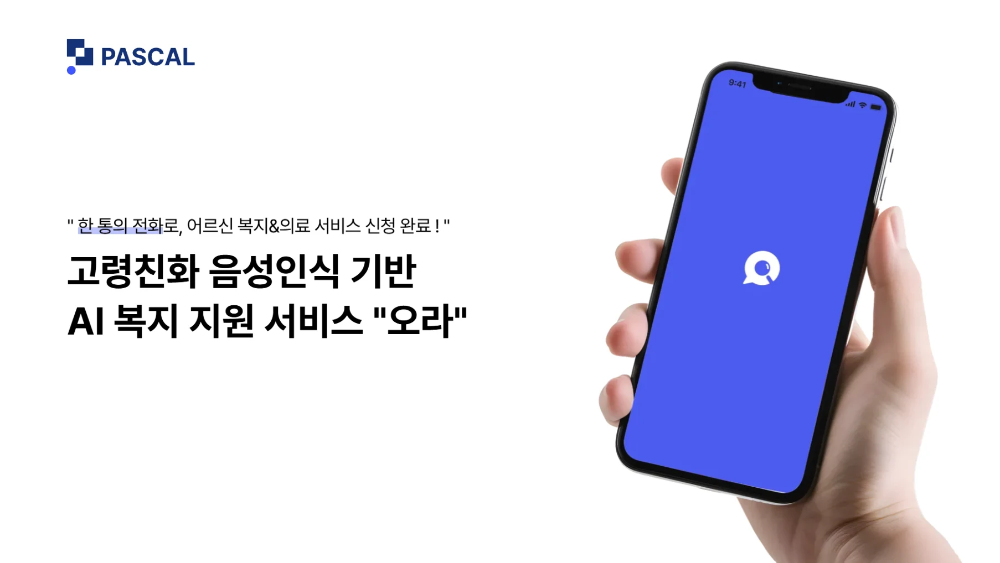
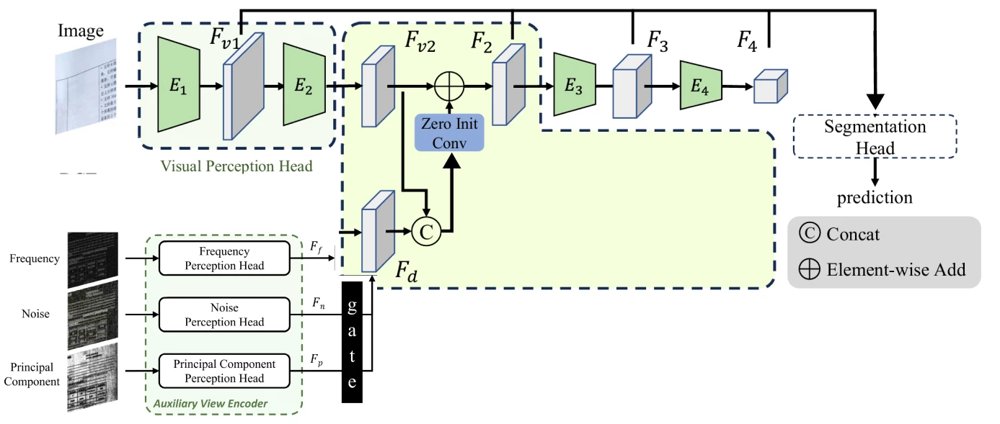
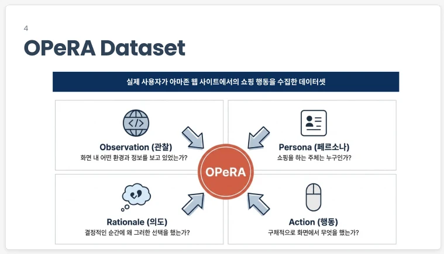
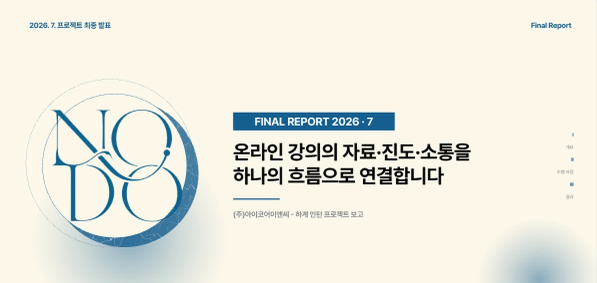
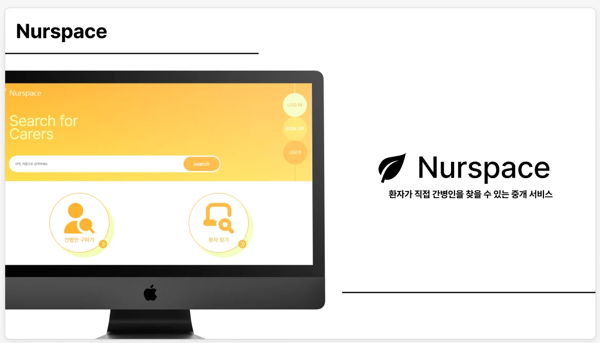
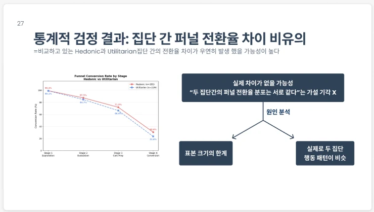
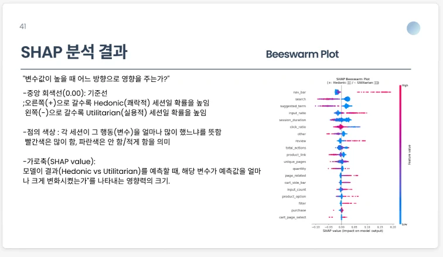
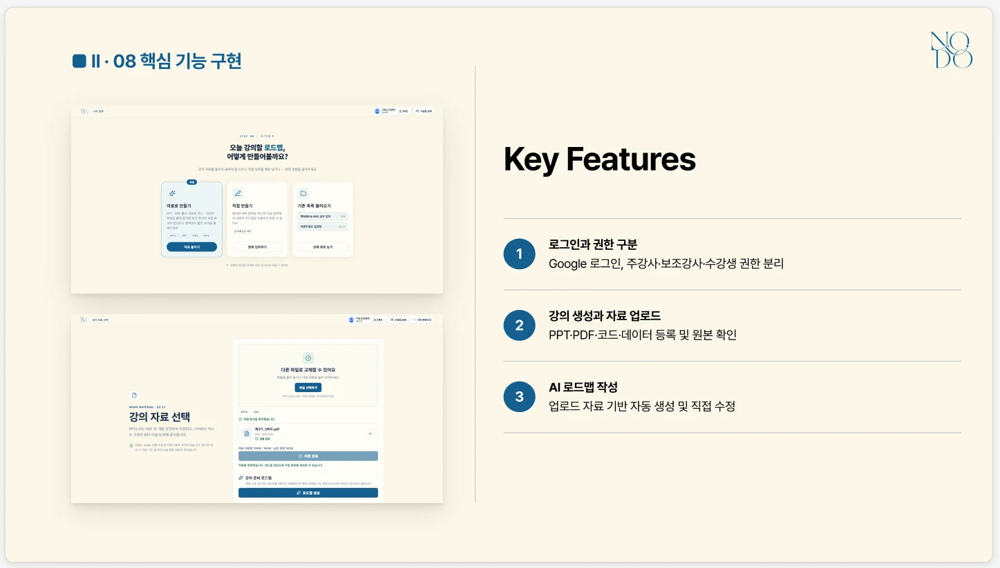

<title>안채연 포트폴리오</title>
<!-- v9 변경 이유: 상단 awards 칸에 10/4 확정한 수상 4개 모두 표시 -->
<link rel="preconnect" href="https://fonts.googleapis.com">
<link rel="preconnect" href="https://fonts.gstatic.com" crossorigin>
<link rel="stylesheet" href="https://fonts.googleapis.com/css2?family=Archivo:wdth,wght@62..125,400..800&family=JetBrains+Mono:wght@400;500&family=Noto+Sans+KR:wght@400;500;700;900&display=swap">
<style>
/* Layout: 다크 에디토리얼. 가는 선으로 나눈 칸(그리드 블록) 위에 큰 영문 제목 + 한글 본문.
   상단 3칸 정보줄 → 이름/한 문장 → 정보 3칸 → Selected Work(번호 칸 목록) → 사례(좌 정보 블록 | 우 본문) → About → Contact.
   밝은/어두운 테마 모두 지원(기기 설정 + 전환 버튼). 색은 흑백만, 강조는 반전으로. */
:root{
  color-scheme:light;
  --bg:#F4F5F7; --panel:#FFFFFF; --panel-2:#E9ECF0; --side:#E9ECF0; --line:#D3D8DE; --fg:#121418; --muted:#535B66; --ghost:#C9CED5; --invert:#121418; --on-invert:#F4F5F7; --meter:#98A0AA;
  --display:'Archivo','Noto Sans KR',sans-serif;
  --text:'Noto Sans KR','Apple SD Gothic Neo','Malgun Gothic',sans-serif;
  --mono:'JetBrains Mono','Noto Sans KR',Consolas,monospace;
}
@media (prefers-color-scheme: dark){:root:not([data-theme="light"]){--bg:#0D0E10; --panel:#15171A; --panel-2:#1C1F23; --side:#15171A; --line:#2B2F35; --fg:#ECEDEF; --muted:#A3A9B1; --ghost:#3A3F46; --invert:#F2F3F4; --on-invert:#0D0E10; --meter:#7C838C; color-scheme:dark}}
:root[data-theme="dark"]{--bg:#0D0E10; --panel:#15171A; --panel-2:#1C1F23; --side:#15171A; --line:#2B2F35; --fg:#ECEDEF; --muted:#A3A9B1; --ghost:#3A3F46; --invert:#F2F3F4; --on-invert:#0D0E10; --meter:#7C838C; color-scheme:dark}
*{box-sizing:border-box}
html{font-size:18px; scroll-behavior:smooth; scroll-padding-top:72px}
@media (prefers-reduced-motion:reduce){html{scroll-behavior:auto}}
body{margin:0; background:var(--bg); color:var(--fg); font-family:var(--text); line-height:1.75; word-break:keep-all; overflow-wrap:anywhere; -webkit-font-smoothing:antialiased}
h1,h2,h3,h4,p,ul,ol,dl,dd,figure{margin:0}
h1,h2,h3,h4{line-height:1.3; text-wrap:balance}
img{max-width:100%; height:auto; display:block}
a{color:inherit}
:focus-visible{outline:2px solid var(--invert); outline-offset:3px}
::selection{background:var(--invert); color:var(--on-invert)}

.frame{max-width:1280px; margin:0 auto; padding-inline:clamp(16px,3vw,32px)}
.label{font-family:var(--mono); font-size:.85rem; color:var(--muted); letter-spacing:.01em}

/* 상단 바 */
.bar{position:sticky; top:env(safe-area-inset-top,0px); z-index:10; background:var(--bg); border-bottom:1px solid var(--line)}
.bar .frame{display:grid; grid-template-columns:1fr auto 1fr; align-items:center; min-height:60px; gap:16px}
.bar b{font-weight:700}
.bar nav{display:flex; gap:clamp(12px,3vw,36px)}
.bar nav a{text-decoration:none; font-size:.95rem; color:var(--muted); padding-block:10px}
.bar nav a:hover{color:var(--fg)}
.bar-end{justify-self:end; display:flex; align-items:center; gap:16px}
.theme{font:inherit; font-size:.85rem; color:var(--fg); background:transparent; border:1px solid var(--line); border-radius:999px; padding:6px 14px; min-height:40px; cursor:pointer}
.theme:hover{border-color:var(--muted)}
@media (max-width:640px){.bar .frame{grid-template-columns:auto 1fr auto}.bar .label{display:none}.bar nav{justify-self:end}}

/* 히어로 */
.hero{border-bottom:1px solid var(--line)}
.hero-top{display:grid; grid-template-columns:repeat(3,1fr); border-bottom:1px solid var(--line)}
.hero-top span{padding:14px 0}
.hero-top span:nth-child(2){text-align:center}
.hero-top span:nth-child(3){text-align:right}
.hero-word{font-family:var(--display); font-weight:800; font-stretch:125%; font-size:clamp(3.4rem,15vw,13.5rem); line-height:.86; letter-spacing:-.045em; padding-block:clamp(28px,5vw,56px) 0; color:var(--fg)}
.hero-main{display:grid; grid-template-columns:minmax(0,1fr) minmax(0,1.2fr); gap:clamp(24px,5vw,64px); padding-block:clamp(36px,6vw,72px); align-items:end}
.hero-main h1{font-size:clamp(2.6rem,6vw,4.4rem); font-weight:900; letter-spacing:-.03em; line-height:1}
.hero-main h1 small{display:block; font-size:1.05rem; font-weight:400; color:var(--muted); letter-spacing:0; margin-top:14px; line-height:1.5}
.hero-main p{font-size:clamp(1.25rem,2.4vw,1.7rem); line-height:1.5; font-weight:500}
@media (max-width:760px){.hero-main{grid-template-columns:1fr}}
.info{display:grid; grid-template-columns:repeat(3,1fr); border-top:1px solid var(--line)}
.info > div{padding:22px 24px 26px 0; display:flex; flex-direction:column; gap:6px}
.info > div + div{padding-left:24px; border-left:1px solid var(--line)}
.info dd{font-size:1.02rem}
@media (max-width:760px){.info{grid-template-columns:1fr}.info > div + div{padding-left:0; border-left:0; border-top:1px solid var(--line)}}
.copy{font:inherit; font-size:.9rem; color:var(--on-invert); background:var(--invert); border:0; border-radius:999px; padding:8px 16px; min-height:40px; cursor:pointer; align-self:flex-start; margin-top:6px}

/* 섹션 제목 */
.sec-head{display:flex; justify-content:space-between; align-items:end; gap:24px; padding-block:clamp(64px,10vw,120px) 24px; border-bottom:1px solid var(--line)}
.sec-head h2{font-family:var(--display); font-weight:800; font-stretch:112%; font-size:clamp(2.6rem,8vw,6.2rem); letter-spacing:-.04em; line-height:.9}
.sec-head .label{text-align:right; flex:none}

/* 작업 목록: 번호 칸 */
.rows{border-bottom:1px solid var(--line)}
.row{display:grid; grid-template-columns:96px minmax(0,1fr) minmax(0,1.15fr); text-decoration:none; border-top:1px solid var(--line); transition:background-color .2s ease-out}
.row:first-child{border-top:0}
.row > *{padding:28px 28px}
.row > * + *{border-left:1px solid var(--line)}
.row .no{font-family:var(--display); font-weight:700; font-stretch:110%; font-size:1.6rem; color:var(--muted); padding-left:0}
.row .txt{display:flex; flex-direction:column; gap:10px}
.row h3{font-size:1.55rem; font-weight:700; letter-spacing:-.02em}
.row .txt p{color:var(--muted); font-size:1.02rem}
.row .result{margin-top:auto; padding-top:18px; font-size:1.05rem; font-weight:700}
.row .result::before{content:"결과  "; font-family:var(--mono); font-weight:400; font-size:.8rem; color:var(--muted); margin-right:8px}
.row .tags{font-family:var(--mono); font-size:.82rem; color:var(--muted)}
.row .pic{background:var(--panel-2); display:flex; align-items:center; justify-content:center; padding:28px; min-height:260px}
.row .pic img{max-height:300px; width:auto; border-radius:4px; transition:transform .35s ease-out}
.row:hover{background:var(--panel)}
.row:hover .pic img{transform:scale(1.02)}
@media (prefers-reduced-motion:reduce){.row,.row .pic img{transition:none}.row:hover .pic img{transform:none}}
.pic-type{font-family:var(--display); font-weight:800; font-stretch:115%; font-size:clamp(2rem,4vw,3.2rem); letter-spacing:-.03em; line-height:1}
@media (max-width:860px){
  .row{grid-template-columns:56px minmax(0,1fr)}
  .row .pic{grid-column:1 / -1; border-left:0; border-top:1px solid var(--line); min-height:200px}
  .row > *{padding:22px 18px}
  .row .no{font-size:1.2rem}
}

/* 사례 */
.case{display:grid; grid-template-columns:minmax(260px,360px) minmax(0,1fr); border:1px solid var(--line); margin-top:40px}
.case-side{background:var(--side); border-right:1px solid var(--line)}
.case-side .in{position:sticky; top:84px; padding:36px 32px 40px; display:flex; flex-direction:column; gap:28px}
.case-side .no{font-family:var(--mono); font-size:.85rem; color:var(--muted)}
.case-side h2{font-family:var(--display); font-size:clamp(2rem,3.4vw,2.8rem); font-weight:800; font-stretch:105%; letter-spacing:-.03em; line-height:1.05}
.facts{display:grid; gap:0; border-top:1px solid var(--line)}
.facts > div{padding-block:14px; border-bottom:1px solid var(--line); display:flex; flex-direction:column; gap:2px}
.facts dd{font-size:1rem}
.case-body{padding:clamp(28px,4vw,56px); display:flex; flex-direction:column; gap:48px; min-width:0}
@media (max-width:900px){
  .case{grid-template-columns:1fr}
  .case-side{border-right:0; border-bottom:1px solid var(--line)}
  .case-side .in{position:static; padding:28px 20px}
  .case-body{padding:28px 20px}
}
.lead{display:flex; flex-direction:column; gap:10px; padding-bottom:40px; border-bottom:1px solid var(--line)}
.lead strong{font-family:var(--display); font-weight:800; font-stretch:110%; font-size:clamp(2.4rem,5vw,4rem); letter-spacing:-.04em; line-height:1.05; font-variant-numeric:tabular-nums}
.lead.q strong{font-family:var(--text); font-stretch:normal; font-size:clamp(1.6rem,3.2vw,2.4rem); font-weight:700; letter-spacing:-.02em; line-height:1.35}
.lead span{color:var(--muted); font-size:1.05rem}
.block{display:grid; grid-template-columns:minmax(0,1fr); gap:12px}
.block > .label{padding-bottom:10px; border-bottom:1px solid var(--line)}
.block > div{display:flex; flex-direction:column; gap:14px; min-width:0}
.block h4{font-size:1.15rem; font-weight:700; margin-top:10px}
.block h4:first-child{margin-top:0}
.block p,.block li{font-size:1.05rem}
.block ul,.block ol{padding-left:1.2em; display:flex; flex-direction:column; gap:8px}
.block li::marker{color:var(--muted)}
.muted{color:var(--muted)}

figure img{border-radius:4px; background:#FFFFFF}
figure a.zoom{display:block; cursor:zoom-in}
figure a.zoom:focus-visible{outline-offset:-3px}
figcaption{font-size:.92rem; color:var(--muted); margin-top:10px}
.pair{display:grid; grid-template-columns:repeat(auto-fit,minmax(min(240px,100%),1fr)); gap:16px}

/* 도식 공통 */
.diagram{border:1px solid var(--line); background:var(--panel); padding:clamp(18px,3vw,28px); display:flex; flex-direction:column; gap:18px}
.diagram > .label{display:flex; justify-content:space-between; gap:12px}
.node{border:1px solid var(--line); background:var(--bg); padding:10px 14px; font-size:.98rem; font-weight:500; text-align:center; border-radius:3px}
.node.hi{background:var(--invert); color:var(--on-invert); border-color:var(--invert); font-weight:700}
.data{font-family:var(--mono); font-size:.82rem; color:var(--muted); text-align:center}
.down{width:1px; height:22px; background:var(--muted); margin:0 auto; position:relative}
.down::after{content:""; position:absolute; bottom:-1px; left:-4px; border:4px solid transparent; border-top:6px solid var(--muted); border-bottom:0}

/* 프롬프트 구조: 가로 단계 */
.steps{display:grid; grid-template-columns:repeat(var(--n),minmax(0,1fr)); gap:0 28px}
.step{display:flex; flex-direction:column; gap:10px; position:relative}
.step + .step::before{content:"→"; position:absolute; left:-22px; top:9px; color:var(--muted); font-size:1rem}
.step .down{height:16px}
.step > .node{min-height:3.8em; display:grid; place-items:center}
.merge{display:grid; grid-template-columns:repeat(3,minmax(0,1fr)); gap:0 28px}
.merge i{grid-column:2 / 4; height:22px; border:1px solid var(--muted); border-top:0; margin-inline:25%; position:relative; display:block}
.merge i::after{content:""; position:absolute; left:50%; bottom:-23px; width:1px; height:22px; background:var(--muted)}
.chain{display:flex; flex-direction:column; align-items:center; gap:0; margin-top:22px}
.chain-wrap{display:grid; grid-template-columns:repeat(3,minmax(0,1fr)); gap:0 28px}
.chain-wrap .chain{grid-column:2 / 4}
.chain .node{min-width:min(280px,100%)}
.chain .node small{display:block; font-weight:400; font-size:.85rem; opacity:.75}
@media (max-width:700px){
  .steps{grid-template-columns:1fr; gap:6px}
  .step + .step::before{content:"↓"; position:static; text-align:center}
  .merge{display:none}
  .chain-wrap{grid-template-columns:1fr}
  .chain-wrap .chain{grid-column:1; margin-top:8px}
  .chain-wrap .chain::before{content:"senior_info + rag_results"; font-family:var(--mono); font-size:.82rem; color:var(--muted); margin-bottom:6px}
}

/* 4-Layer 도식 */
.bubble{align-self:flex-start; border:1px solid var(--line); background:var(--bg); padding:12px 18px; border-radius:16px 16px 16px 4px; font-size:1.05rem}
.bubble.out{align-self:flex-end; background:var(--invert); color:var(--on-invert); border-color:var(--invert); border-radius:16px 16px 4px 16px; font-weight:500}
.bubble .label{display:block; color:inherit; opacity:.7; margin-bottom:2px}
.stack{border:1px solid var(--line); display:flex; flex-direction:column}
.layer{display:grid; grid-template-columns:200px minmax(0,1fr); background:var(--bg)}
.layer + .layer{border-top:1px solid var(--line)}
.layer-name{padding:16px 18px; border-right:1px solid var(--line); display:flex; flex-direction:column; gap:2px; background:var(--panel-2)}
.layer-name b{font-family:var(--display); font-stretch:110%; font-size:1.2rem; font-weight:800}
.layer-name span{font-size:.92rem}
.layer-name em{font-style:normal; font-size:.82rem; color:var(--muted); font-family:var(--mono)}
.layer-do{padding:16px 20px; display:flex; flex-direction:column; justify-content:center; gap:8px}
.layer-do .sub{display:grid; grid-template-columns:repeat(3,minmax(0,1fr)); gap:8px}
.layer-do .sub div{border:1px solid var(--line); padding:8px 10px; font-size:.95rem; border-radius:3px}
.layer-do .sub div .label{display:block}
.layer.skip .layer-do{color:var(--muted)}
.checks{list-style:none; padding:0; display:flex; flex-wrap:wrap; gap:8px 20px}
.checks li{display:flex; gap:8px; align-items:center; font-size:.98rem}
.checks li::before{content:"✓"; display:inline-grid; place-items:center; width:20px; height:20px; border-radius:50%; background:var(--invert); color:var(--on-invert); font-size:.75rem; font-weight:700}
@media (max-width:760px){
  .layer{grid-template-columns:1fr}
  .layer-name{border-right:0; border-bottom:1px solid var(--line)}
  .layer-do .sub{grid-template-columns:1fr}
}

/* OCR 로직도 */
.ocr-flow{display:grid; grid-template-columns:repeat(5,minmax(0,1fr)); gap:0 22px}
.ocr-bypass{grid-column:1 / -1; height:24px; border:1px dashed var(--muted); border-bottom:0; margin:14px 10% 0; position:relative}
.ocr-bypass span{position:absolute; top:-.85em; left:50%; transform:translateX(-50%); background:var(--panel); padding:0 10px; font-family:var(--mono); font-size:.8rem; color:var(--muted); white-space:nowrap}
.ostep{display:flex; flex-direction:column; gap:10px; position:relative; min-width:0}
.ostep + .ostep::before{content:"→"; position:absolute; left:-18px; top:1.5em; color:var(--muted)}
.ostep .node{min-height:5.2em; display:flex; flex-direction:column; justify-content:center; gap:2px; text-align:left; padding:12px 14px}
.ostep .node b{font-family:var(--display); font-weight:700; font-size:.8rem; color:var(--muted)}
.ostep .node strong{font-size:1rem; font-weight:700}
.ostep .tool{font-family:var(--mono); font-size:.8rem; color:var(--muted)}
.ostep p{font-size:.92rem; line-height:1.55}
.ostep.key .node{background:var(--invert); color:var(--on-invert); border-color:var(--invert)}
.ostep.key .node b{color:inherit; opacity:.7}
.ocr-out{display:flex; flex-wrap:wrap; justify-content:space-between; align-items:baseline; gap:8px 24px; border-top:1px solid var(--line); padding-top:16px}
.ocr-out strong{font-family:var(--display); font-weight:800; font-stretch:110%; font-size:1.6rem; letter-spacing:-.02em}
.ocr-out span{color:var(--muted); font-size:.95rem}
.mobile-note{display:none}
@media (max-width:760px){
  .ocr-flow{grid-template-columns:1fr; gap:6px}
  .ocr-bypass{display:none}
  .ostep + .ostep::before{content:"↓"; position:static; text-align:center}
  .ostep .node{min-height:0}
  .mobile-note{display:block}
}

/* OCR 썸네일 */
.mini-ocr{width:100%; max-width:520px; display:flex; flex-direction:column; gap:14px}
.mini-bypass{height:18px; border:1px dashed var(--muted); border-bottom:0; margin-inline:9%; position:relative}
.mini-bypass span{position:absolute; top:-.8em; left:50%; transform:translateX(-50%); background:var(--panel-2); padding:0 8px; font-family:var(--mono); font-size:.78rem; color:var(--muted); white-space:nowrap}
.mini-row{display:grid; grid-template-columns:repeat(5,minmax(0,1fr)); gap:8px}
.mini-row span{border:1px solid var(--line); background:var(--bg); border-radius:3px; padding:10px 4px; text-align:center; font-size:.85rem; font-weight:700; display:flex; flex-direction:column; gap:2px}
.mini-row span b{font-family:var(--display); font-size:.75rem; color:var(--muted); font-weight:600}
.mini-row span.k{background:var(--invert); color:var(--on-invert); border-color:var(--invert)}
.mini-row span.k b{color:inherit; opacity:.7}
.mini-out{display:flex; justify-content:space-between; align-items:baseline; border-top:1px solid var(--line); padding-top:12px; gap:12px}
.mini-out strong{font-family:var(--display); font-weight:800; font-stretch:110%; font-size:clamp(1.4rem,3vw,2rem); letter-spacing:-.02em}
.mini-out span{font-size:.85rem; color:var(--muted)}

/* 막대 */
.bars{display:grid; grid-template-columns:repeat(auto-fit,minmax(min(240px,100%),1fr)); gap:18px 36px}
.bars figcaption{grid-column:1 / -1}
.meter{display:grid; grid-template-columns:3.4em minmax(0,1fr) 3.4em; gap:12px; align-items:center; padding-block:4px}
.bar-track{height:8px; background:var(--panel-2); border-radius:4px; overflow:hidden}
.bar-fill{display:block; height:100%; width:calc(var(--v) / 1.35 * 100%); background:var(--meter); border-radius:4px}
.meter.best .bar-fill{background:var(--invert)}
.meter.best span:not(.bar-track){font-weight:700}
.bar-val{text-align:right; font-variant-numeric:tabular-nums}

table{border-collapse:collapse; width:100%; font-size:1.02rem; font-variant-numeric:tabular-nums}
th,td{text-align:left; padding:12px 0; border-bottom:1px solid var(--line)}
th{font-family:var(--mono); font-weight:400; color:var(--muted); font-size:.82rem}
td.up{font-weight:700}

/* About */
.about-grid{display:grid; grid-template-columns:minmax(0,1fr) minmax(0,1.4fr); border-bottom:1px solid var(--line)}
.about-grid > *{padding-block:40px}
.about-grid > p{padding-right:clamp(20px,4vw,56px); font-size:clamp(1.2rem,2vw,1.45rem); line-height:1.6; font-weight:500}
.about-grid > div{border-left:1px solid var(--line); padding-left:clamp(20px,4vw,56px); display:flex; flex-direction:column; gap:40px}
@media (max-width:860px){.about-grid{grid-template-columns:1fr}.about-grid > div{border-left:0; padding-left:0; border-top:1px solid var(--line)}}
.hist ul{list-style:none; padding:0; margin-top:10px}
.hist li{display:grid; grid-template-columns:7em minmax(0,1fr); gap:16px; padding-block:12px; border-bottom:1px solid var(--line); font-size:1.02rem}
.hist li span{font-family:var(--mono); font-size:.85rem; color:var(--muted); padding-top:3px}
.skills{display:flex; flex-wrap:wrap; gap:8px; margin-top:12px}
.skills span{border:1px solid var(--line); border-radius:999px; padding:5px 14px; font-size:.95rem}

/* Contact */
.contact{padding-block:clamp(64px,10vw,120px) 40px}
.contact .mail{font-family:var(--display); font-weight:800; font-stretch:105%; font-size:clamp(1.7rem,6vw,4.6rem); letter-spacing:-.035em; line-height:1.05; text-decoration:none; display:inline-block; margin-top:16px}
.contact .mail:hover{text-decoration:underline; text-underline-offset:8px; text-decoration-thickness:2px}
.foot{display:flex; justify-content:space-between; flex-wrap:wrap; gap:12px; border-top:1px solid var(--line); margin-top:64px; padding-block:18px 40px}
</style>

<header class="bar">
  <div class="frame">
    <b>안채연</b>
    <nav aria-label="페이지 메뉴"><a href="#work">Work</a><a href="#about">About</a><a href="#contact">Contact</a></nav>
    <div class="bar-end"><span class="label">AI Developer Portfolio</span><button class="theme" type="button" id="theme-toggle">밝게 보기</button></div>
  </div>
</header>

<main>
  <section class="hero">
    <div class="frame">
      <div class="hero-top label"><span>portfolio/</span><span>2024 – 2026</span><span>updated 2026.10</span></div>
      <p class="hero-word" aria-hidden="true">Portfolio</p>
      <div class="hero-main">
        <h1>안채연<small>AI 개발 신입 지원 · AI융합학과 2027년 2월 졸업 예정</small></h1>
        <p>모델을 수치로 비교해 고르고, 서비스에 맞는 구조로 설계합니다.</p>
      </div>
      <dl class="info">
        <div><dt class="label">focus/</dt><dd>음성 AI 서비스, LLM 응답 설계, 컴퓨터비전</dd></div>
        <div><dt class="label">awards/</dt><dd>보건복지부장관상 최우수상 (팀)<br>중소벤처기업부장관상 특별상 (팀)<br>생성형 AI 아이디어 경진대회 1등<br>산학협력 팀프로젝트 연구 발표 동상</dd></div>
        <div><dt class="label">contact/</dt><dd id="mail">pianofan9@gmail.com</dd><button class="copy" type="button" data-copy="pianofan9@gmail.com">이메일 복사</button></div>
      </dl>
    </div>
  </section>

  <section id="work" class="frame" aria-labelledby="work-title">
    <div class="sec-head"><h2 id="work-title">Selected Work</h2><span class="label">작업 6개<br>AI 직무 관련도 순</span></div>
    <div class="rows">
      <a class="row" href="#ora">
        <span class="no">01</span>
        <div class="txt"><h3>ORA 고령자 음성 AI 서비스</h3><p>전화로 대화하는 AI. 응답 구조와 프롬프트 설계</p><span class="tags">2025 / Whisper / RAG / BERT</span><span class="result">응답 4~6초 → 1~2초</span></div>
        <div class="pic"></div>
      </a>
      <a class="row" href="#ocr">
        <span class="no">02</span>
        <div class="txt"><h3>심리검사지 OCR 자동화</h3><p>대학병원 손글씨 검사지를 텍스트 데이터로</p><span class="tags">2026 / Vision API / Gemini</span><span class="result">약 1,100건 중 약 91% 자동 처리</span></div>
        <div class="pic"><div class="mini-ocr" role="img" aria-label="OCR 처리 5단계: PDF 변환, OCR, 줄 정렬, 문서 분류, Gemini 값 추출. 원본 이미지는 마지막 단계에 함께 전달. 약 1,100건 중 약 1,000건 처리">
          <div class="mini-bypass"><span>원본 이미지 함께 전달</span></div>
          <div class="mini-row"><span><b>01</b>PDF</span><span><b>02</b>OCR</span><span><b>03</b>줄 정렬</span><span><b>04</b>분류</span><span class="k"><b>05</b>Gemini</span></div>
          <div class="mini-out"><strong>1,000 / 1,100</strong><span>검사지 자동 처리</span></div>
        </div></div>
      </a>
      <a class="row" href="#forgery">
        <span class="no">03</span>
        <div class="txt"><h3>텍스트 위조 탐지 연구</h3><p>모듈 제거·결합 실험으로 탐지 모델 개선</p><span class="tags">2026 / DTD / FFDN / TTFN</span><span class="result">F1 0.806 → 0.846</span></div>
        <div class="pic"></div>
      </a>
      <a class="row" href="#opera">
        <span class="no">04</span>
        <div class="txt"><h3>쇼핑 행동 데이터 분석</h3><p>쾌락형과 실용형 쇼핑의 행동 차이 검증</p><span class="tags">2026 / Random Forest / SHAP</span><span class="result">가설 2개 통계·머신러닝 검증</span></div>
        <div class="pic"></div>
      </a>
      <a class="row" href="#nodo">
        <span class="no">05</span>
        <div class="txt"><h3>NODO 강의 보조 프로그램</h3><p>기업 인턴. 기획, UI/UX 디자인, PM</p><span class="tags">2026 / 3인 팀 / 3주</span><span class="result">기한 내 완성, 회사 도입 검토</span></div>
        <div class="pic"></div>
      </a>
      <a class="row" href="#nurspace">
        <span class="no">06</span>
        <div class="txt"><h3>Nurspace 간병인 매칭 웹</h3><p>해커톤. UI 디자인과 React 화면 구현</p><span class="tags">2024 / React / 6인 팀</span><span class="result">해커톤 시연 완료</span></div>
        <div class="pic"></div>
      </a>
    </div>
  </section>

  <div class="frame">
    <!-- 01 ORA -->
    <article class="case" id="ora">
      <aside class="case-side"><div class="in">
        <span class="no">case 01/</span>
        <h2>ORA</h2>
        <dl class="facts">
          <div><dt class="label">기간</dt><dd>2025년 1월 – 12월</dd></div>
          <div><dt class="label">소속</dt><dd>창업동아리 PASCAL</dd></div>
          <div><dt class="label">역할</dt><dd>AI 파트 주니어 개발자</dd></div>
          <div><dt class="label">기술</dt><dd>Whisper, RAG, Gemini, BERT</dd></div>
          <div><dt class="label">수상 (팀)</dt><dd>보건복지부장관상 최우수상<br>중소벤처기업부장관상 특별상</dd></div>
        </dl>
      </div></aside>
      <div class="case-body">
        <div class="lead"><strong>4~6초 → 1~2초</strong><span>AI 응답 시간. 응답 구조를 직접 설계해 줄였습니다.</span></div>

        <div class="block"><span class="label">problem/</span><div>
          <p>어르신이 전화로 AI와 대화하며 복지·의료 서비스를 신청하는 서비스입니다. 모든 질문을 LLM이 처리해 답이 4~6초씩 걸렸고, 실제 통화처럼 느껴지지 않았습니다.</p>
        </div></div>

        <div class="block"><span class="label">model/</span><div>
          <h4>음성 인식 모델은 수치로 비교해 골랐습니다</h4>
          <p>Whisper tiny, base, small을 같은 문장으로 시험해 오류율을 비교했습니다. 파인튜닝까지 진행했지만 서비스 적용은 보류했습니다.</p>
          <figure class="bars">
            <div>
              <p class="label">평균 단어 오류율 WER</p>
              <div class="meter"><span>tiny</span><span class="bar-track" aria-hidden="true"><span class="bar-fill" style="--v:1.025"></span></span><span class="bar-val">1.025</span></div>
              <div class="meter best"><span>base</span><span class="bar-track" aria-hidden="true"><span class="bar-fill" style="--v:0.498"></span></span><span class="bar-val">0.498</span></div>
              <div class="meter"><span>small</span><span class="bar-track" aria-hidden="true"><span class="bar-fill" style="--v:0.856"></span></span><span class="bar-val">0.856</span></div>
            </div>
            <div>
              <p class="label">평균 글자 오류율 CER</p>
              <div class="meter"><span>tiny</span><span class="bar-track" aria-hidden="true"><span class="bar-fill" style="--v:1.35"></span></span><span class="bar-val">1.35</span></div>
              <div class="meter best"><span>base</span><span class="bar-track" aria-hidden="true"><span class="bar-fill" style="--v:0.335"></span></span><span class="bar-val">0.335</span></div>
              <div class="meter"><span>small</span><span class="bar-track" aria-hidden="true"><span class="bar-fill" style="--v:0.793"></span></span><span class="bar-val">0.793</span></div>
            </div>
            <figcaption>낮을수록 정확합니다. 두 지표 모두 base가 가장 낮았습니다. <a href="img/whisper_compare.webp" target="_blank" rel="noopener">원본 그래프</a></figcaption>
          </figure>
        </div></div>

        <div class="block"><span class="label">pipeline/</span><div>
          <h4>프롬프트를 상황마다 새로 만들도록 구조를 바꿨습니다</h4>
          <p>기존에는 미리 써 둔 고정 프롬프트로 Gemini를 호출했습니다. 사용자 정보와 RAG 검색 결과를 합쳐 통화마다 프롬프트를 새로 만드는 함수를 추가했습니다.</p>

          <div class="diagram" role="img" aria-label="기존 구조: 전화 수신, 사용자 정보 로드, RAG 검색, Gemini 호출 순서이며 system_prompt는 정적이다.">
            <div class="label"><span>before/ 기존 구조</span><span>정적 프롬프트</span></div>
            <div class="steps" style="--n:4">
              <div class="step"><div class="node">전화 수신</div></div>
              <div class="step"><div class="node">사용자 정보 로드</div><div class="down"></div><div class="data">senior_info</div></div>
              <div class="step"><div class="node">RAG 검색</div><div class="down"></div><div class="data">rag_results</div></div>
              <div class="step"><div class="node">Gemini 호출</div><div class="down"></div><div class="data">system_prompt (정적)</div></div>
            </div>
          </div>

          <div class="diagram" role="img" aria-label="통합 후 구조: senior_info와 rag_results를 build_system_prompt 함수가 합쳐 동적 system_prompt를 만들고, 그 프롬프트로 Gemini를 호출한다.">
            <div class="label"><span>after/ 통합 후 구조</span><span>동적 프롬프트</span></div>
            <div class="steps" style="--n:3">
              <div class="step"><div class="node">전화 수신</div></div>
              <div class="step"><div class="node">사용자 정보 로드</div><div class="down"></div><div class="data">senior_info</div></div>
              <div class="step"><div class="node">RAG 검색</div><div class="down"></div><div class="data">rag_results</div></div>
            </div>
            <div class="merge" aria-hidden="true"><i></i></div>
            <div class="chain-wrap"><div class="chain">
              <div class="node hi">build_system_prompt<small>새로 만든 함수 · 동적 프롬프트 생성</small></div>
              <div class="down"></div>
              <div class="data">system_prompt (동적)</div>
              <div class="down"></div>
              <div class="node">Gemini 호출</div>
            </div></div>
          </div>
          <p class="muted">날씨처럼 답이 정해진 질문은 API와 RAG로 바로 답하게 해, LLM이 처리하는 양 자체도 줄였습니다. 직접 50회 테스트해 오류를 1~2회로 줄였습니다.</p>
        </div></div>

        <div class="block"><span class="label">4-layer/</span><div>
          <h4>AI가 스스로 상황을 판단하는 4-Layer 구조</h4>
          <p>문제가 생길 때마다 프롬프트에 예시를 덧붙이던 방식은 규칙이 끝없이 늘어났습니다. 그래서 모든 응답이 네 층을 차례로 거치도록 설계했습니다. 아래는 실제 발화 하나가 네 층을 통과하는 과정입니다.</p>

          <div class="diagram" role="img" aria-label="사용자 발화 '무릎이 너무 아파'가 Layer 1 정체성, Layer 2 판단 틀, Layer 3 특수 상황, Layer 4 품질 점검을 차례로 거쳐 최종 응답 '저런, 비 오는 날이면 더 쑤시죠? 파스는 붙이셨어요?'가 된다.">
            <div class="label"><span>example/ 발화 하나가 네 층을 지나는 과정</span><span>L1 → L4</span></div>
            <p class="bubble"><span class="label">사용자 발화</span>"무릎이 너무 아파"</p>
            <div class="down"></div>
            <div class="stack">
              <div class="layer">
                <div class="layer-name"><b>L1</b><span>정체성</span><em>항상 적용 · 불변</em></div>
                <div class="layer-do"><p>정해진 AI 페르소나로 응답합니다. 해요체, 따뜻한 톤.</p></div>
              </div>
              <div class="layer">
                <div class="layer-name"><b>L2</b><span>판단 틀</span><em>모든 응답의 사고 과정</em></div>
                <div class="layer-do"><div class="sub">
                  <div><span class="label">step1 감정</span>"고통/불편" 감지</div>
                  <div><span class="label">step2 모드</span>감성 우선 (90:10)</div>
                  <div><span class="label">step3 질문</span>반드시 질문으로 끝내기</div>
                </div></div>
              </div>
              <div class="layer skip">
                <div class="layer-name"><b>L3</b><span>특수 상황</span><em>필요할 때만 · 최소 유지</em></div>
                <div class="layer-do"><p>해당 없음. 일반적인 건강 이야기입니다.</p></div>
              </div>
              <div class="layer">
                <div class="layer-name"><b>L4</b><span>품질 점검</span><em>생성 후 최종 필터</em></div>
                <div class="layer-do"><ul class="checks"><li>질문으로 끝나는가</li><li>앵무새처럼 따라 하지 않았는가</li><li>1~2문장인가</li></ul></div>
              </div>
            </div>
            <div class="down"></div>
            <p class="bubble out"><span class="label">최종 응답</span>"저런, 비 오는 날이면 더 쑤시죠? 파스는 붙이셨어요?"</p>
          </div>
        </div></div>

        <div class="block"><span class="label">classify/</span><div>
          <h4>대화 주제는 규칙과 BERT로 나눠 분류했습니다</h4>
          <p>명확한 경우는 키워드·패턴 규칙으로 먼저 분류하고, 규칙으로 분류되지 않은 대화만 BERT 모델로 넘겼습니다.</p>
        </div></div>

        <div class="block"><span class="label">result/</span><div>
          <p>응답 시간이 1~2초로 줄어 실제 대화에 가까워졌습니다. 팀은 이 서비스로 장관상 두 개를 받았습니다.</p>
          <p class="muted">합류할 때는 AI 지식이 거의 없어 Attention과 Transformer부터 공부했습니다.</p>
        </div></div>
      </div>
    </article>

    <!-- 02 OCR -->
    <article class="case" id="ocr">
      <aside class="case-side"><div class="in">
        <span class="no">case 02/</span>
        <h2>심리검사지 OCR 자동화</h2>
        <dl class="facts">
          <div><dt class="label">기간</dt><dd>2026년 3월 – 현재</dd></div>
          <div><dt class="label">소속</dt><dd>컴퓨터비전 연구실 (대학병원 협업)</dd></div>
          <div><dt class="label">역할</dt><dd>학부연구생, 단독 수행</dd></div>
          <div><dt class="label">기술</dt><dd>Google Vision API, Gemini 2.5 Flash, Python</dd></div>
        </dl>
      </div></aside>
      <div class="case-body">
        <div class="lead"><strong>약 91%</strong><span>검사지 약 1,100건 중 약 1,000건을 자동으로 텍스트화했습니다.</span></div>
        <div class="block"><span class="label">problem/</span><div>
          <p>검사지가 스캔 PDF라 글자를 뽑을 수 없었습니다. 손글씨 숫자와 문장이 섞여 있었고, 여러 종류의 검사지가 무작위로 섞여 있었습니다.</p>
        </div></div>
        <div class="block"><span class="label">process/</span><div>
          <div class="diagram" role="img" aria-label="OCR 처리 5단계. 1 스캔 PDF를 페이지별 이미지로 변환, 2 Vision API로 단어와 좌표 추출, 3 세로 위치 기준으로 같은 줄 묶기, 4 상단 1,000자 키워드로 문서 종류 판별, 5 Gemini가 원본 이미지와 정렬 텍스트를 대조해 값 추출. 원본 이미지는 5단계에 함께 전달된다. 결과는 약 1,100건 중 약 1,000건.">
            <div class="label"><span>logic/ 처리 순서</span><span>scan → text data</span></div>
            <div class="ocr-flow">
              <div class="ocr-bypass" aria-hidden="true"><span>원본 이미지 → 05단계 교차 확인용</span></div>
              <div class="ostep"><div class="node"><b>01</b><strong>이미지 변환</strong></div><span class="tool">pdf2image</span><p>스캔 PDF를 페이지별 JPEG로 나눕니다.</p></div>
              <div class="ostep"><div class="node"><b>02</b><strong>OCR</strong></div><span class="tool">Vision API</span><p>단어와 꼭짓점 좌표를 함께 뽑습니다.</p></div>
              <div class="ostep"><div class="node"><b>03</b><strong>줄 정렬</strong></div><span class="tool">Python</span><p>세로 위치가 가까운 단어를 한 줄로 묶고 왼쪽부터 다시 놓습니다.</p></div>
              <div class="ostep"><div class="node"><b>04</b><strong>문서 분류</strong></div><span class="tool">규칙 기반</span><p>상단 1,000자에서 검사지 고유 제목과 지시문을 찾습니다.</p></div>
              <div class="ostep key"><div class="node"><b>05</b><strong>값 추출</strong></div><span class="tool">Gemini 2.5 Flash</span><p>원본 이미지와 정렬 텍스트를 대조해 필요한 값만 남깁니다.<span class="mobile-note muted">원본 이미지도 함께 넣습니다.</span></p></div>
            </div>
            <div class="ocr-out"><strong>약 1,000 / 1,100건</strong><span>정리된 텍스트 데이터 → 데이터 분석 연구실 전달</span></div>
          </div>
          <p>핵심은 3단계와 5단계입니다. 좌표만으로 기울어진 스캔을 바로잡아 사람이 읽는 순서대로 문장을 조립했고, AI에는 정렬된 텍스트와 원본 이미지를 함께 줘서 서로 대조하게 했습니다.</p>
        </div></div>
        <div class="block"><span class="label">result/</span><div>
          <p>1차 처리를 약 하루 만에 끝냈고, 결과를 데이터 분석 연구실에 전달해 컨펌을 받았습니다.</p>
        </div></div>
      </div>
    </article>

    <!-- 03 위조 탐지 -->
    <article class="case" id="forgery">
      <aside class="case-side"><div class="in">
        <span class="no">case 03/</span>
        <h2>텍스트 위조 탐지 연구</h2>
        <dl class="facts">
          <div><dt class="label">기간</dt><dd>2026년 3월 – 진행 중</dd></div>
          <div><dt class="label">소속</dt><dd>컴퓨터비전 연구실</dd></div>
          <div><dt class="label">역할</dt><dd>개인 연구 (국내 학회 투고 목표)</dd></div>
          <div><dt class="label">비교 모델</dt><dd>DTD, FFDN, TTFN</dd></div>
        </dl>
      </div></aside>
      <div class="case-body">
        <div class="lead"><strong>F1 0.806 → 0.846</strong><span>SCD 교차 데이터셋 기준</span></div>
        <div class="block"><span class="label">model/</span><div>
          <p>관련 논문 3~4편을 분석하고 DTD, FFDN, TTFN의 기준 성능을 차례로 측정했습니다. 이후 FFDN의 일부 모듈을 빼고 TTFN의 모듈을 더하는 방식으로 실험 모델을 만들었습니다.</p>
          <figure><figcaption>실험 모델 구조. 이미지 특징과 주파수·노이즈·주성분 특징을 합쳐 위조 영역을 예측합니다.</figcaption></figure>
        </div></div>
        <div class="block"><span class="label">result/</span><div>
          <table>
            <thead><tr><th>지표</th><th>기존</th><th>개선</th></tr></thead>
            <tbody>
              <tr><td>Precision</td><td>0.796</td><td class="up">0.860</td></tr>
              <tr><td>Recall</td><td>0.816</td><td class="up">0.832</td></tr>
              <tr><td>F1-score</td><td>0.806</td><td class="up">0.846</td></tr>
            </tbody>
          </table>
          <p class="muted">다른 데이터셋에서는 성능이 떨어져, 일반화 성능을 높이는 실험을 이어 가고 있습니다. 매주 랩미팅에서 진행 상황을 발표합니다.</p>
        </div></div>
      </div>
    </article>

    <!-- 04 OPeRA -->
    <article class="case" id="opera">
      <aside class="case-side"><div class="in">
        <span class="no">case 04/</span>
        <h2>쇼핑 행동 데이터 분석</h2>
        <dl class="facts">
          <div><dt class="label">기간</dt><dd>2026년</dd></div>
          <div><dt class="label">수업</dt><dd>분산및병렬데이터분석, 팀 프로젝트</dd></div>
          <div><dt class="label">역할</dt><dd>선행 연구 조사, 분석 방법 조사, 결과 해석, 발표 자료 제작과 발표</dd></div>
          <div><dt class="label">방법</dt><dd>퍼널 분석, Random Forest, SHAP</dd></div>
        </dl>
      </div></aside>
      <div class="case-body">
        <div class="lead q"><strong>재미로 사는 쇼핑과 필요해서 사는 쇼핑은 행동이 다를까?</strong><span>아마존 실사용자 쇼핑 기록(OPeRA)으로 검증했습니다.</span></div>
        <div class="block"><span class="label">hypothesis 1/</span><div>
          <p>두 집단의 구매 단계별 전환율 차이는 통계적으로 유의하지 않았습니다. 표본 크기의 한계와, 두 집단이 실제로 비슷하게 행동할 가능성을 함께 검토했습니다.</p>
        </div></div>
        <div class="block"><span class="label">hypothesis 2/</span><div>
          <p>세션 안의 행동 변수 19개로 Random Forest 분류 모델을 만들고, SHAP으로 예측에 영향이 큰 변수를 확인했습니다.</p>
          <div class="pair">
            <figure><figcaption>가설 1. 단계별 전환율</figcaption></figure>
            <figure><figcaption>가설 2. SHAP 변수 영향력</figcaption></figure>
          </div>
        </div></div>
      </div>
    </article>

    <!-- 05 NODO -->
    <article class="case" id="nodo">
      <aside class="case-side"><div class="in">
        <span class="no">case 05/</span>
        <h2>NODO</h2>
        <dl class="facts">
          <div><dt class="label">기간</dt><dd>2026년 7월 (3주)</dd></div>
          <div><dt class="label">소속</dt><dd>아이코어이앤씨 하계 인턴, 3인 팀</dd></div>
          <div><dt class="label">역할</dt><dd>기획, UI/UX 디자인, PM, 최종 발표</dd></div>
        </dl>
      </div></aside>
      <div class="case-body">
        <div class="lead q"><strong>강의 자료를 올리면 AI가 수업 로드맵을 만듭니다.</strong><span>학생은 익명으로 질문하며 실시간으로 진도를 따라갑니다.</span></div>
        <div class="block"><span class="label">role/</span><div>
          <ul>
            <li>IT에 익숙하지 않은 강의자도 바로 쓸 수 있도록 화면을 최대한 단순하게 설계했습니다.</li>
            <li>3주 안에 끝내기 위해 개발 팀원과 기능 우선순위를 조율해 범위를 정했습니다.</li>
            <li>기술 스택 버전과 유지보수 비용을 문서로 정리해 회사에 넘겼습니다.</li>
          </ul>
          <figure><figcaption>핵심 기능: 권한 구분, 자료 업로드, AI 로드맵</figcaption></figure>
        </div></div>
        <div class="block"><span class="label">result/</span><div>
          <p>기한 안에 완성해 발표했고, 회사에서 도입을 검토하게 되어 유지보수 문서를 함께 전달했습니다. 개발은 팀원이 맡았습니다.</p>
        </div></div>
      </div>
    </article>

    <!-- 06 Nurspace -->
    <article class="case" id="nurspace">
      <aside class="case-side"><div class="in">
        <span class="no">case 06/</span>
        <h2>Nurspace</h2>
        <dl class="facts">
          <div><dt class="label">기간</dt><dd>2024년</dd></div>
          <div><dt class="label">소속</dt><dd>멋쟁이사자처럼 해커톤, 6인 팀</dd></div>
          <div><dt class="label">역할</dt><dd>UI 디자인, React 프론트엔드</dd></div>
        </dl>
      </div></aside>
      <div class="case-body">
        <div class="block"><span class="label">summary/</span><div>
          <p>환자가 직접 간병인을 찾고 프로필과 리뷰를 확인하는 중개 웹 서비스입니다. 전체 UI를 디자인하고 React로 메인·유저 화면과 검색, 필터, 프로필, 리뷰 기능을 구현했습니다. 해커톤에서 시연까지 마쳤습니다.</p>
          <figure></figure>
        </div></div>
      </div>
    </article>
  </div>

  <section id="about" class="frame" aria-labelledby="about-title">
    <div class="sec-head"><h2 id="about-title">About</h2><span class="label">소개</span></div>
    <div class="about-grid">
      <p>웹 화면을 만드는 일로 시작해 음성 AI 서비스와 컴퓨터비전 연구로 넓혀 왔습니다. 모델은 같은 기준으로 측정해 비교하고, 규칙으로 풀 수 있는 부분은 규칙으로, 판단이 필요한 부분만 AI에 맡기는 구조를 선호합니다.</p>
      <div>
        <div class="hist"><span class="label">awards/</span>
          <ul>
            <li><span>2025.07</span>보건복지부장관상 최우수상 (팀, ORA)</li>
            <li><span>2025.12</span>중소벤처기업부장관상 특별상 (팀, ORA)</li>
            <li><span>—</span>생성형 AI 아이디어 경진대회 1등 (시장상)</li>
            <li><span>—</span>성균관대 컨소시엄 산학협력 팀프로젝트 연구 발표 동상</li>
          </ul>
        </div>
        <div class="hist"><span class="label">education/</span>
          <ul><li><span>2027.02</span>AI융합학과 학사 졸업 예정</li></ul>
        </div>
        <div class="hist"><span class="label">experience/</span>
          <ul>
            <li><span>2026.07</span>아이코어이앤씨 하계 인턴 (사업개발팀)</li>
            <li><span>2026.03 –</span>컴퓨터비전 연구실 학부연구생</li>
            <li><span>2025</span>창업동아리 PASCAL AI 파트</li>
            <li><span>2024</span>멋쟁이사자처럼 프론트엔드 트랙</li>
          </ul>
        </div>
        <div><span class="label">tools/</span>
          <div class="skills"><span>Python</span><span>Whisper</span><span>RAG</span><span>BERT</span><span>Gemini API</span><span>Google Vision API</span><span>Random Forest</span><span>SHAP</span><span>React</span></div>
        </div>
      </div>
    </div>
  </section>

  <section id="contact" class="frame contact" aria-labelledby="contact-title">
    <h2 id="contact-title" class="label">contact/</h2>
    <a class="mail" href="mailto:pianofan9@gmail.com">pianofan9@gmail.com</a>
    <div class="foot label"><span>안채연 · AI Developer Portfolio</span><a href="#work">맨 위 작업 목록으로</a></div>
  </section>
</main>

<script>
(function () {
  var root = document.documentElement, btn = document.getElementById('theme-toggle');
  function current() { return root.dataset.theme || (window.matchMedia('(prefers-color-scheme: dark)').matches ? 'dark' : 'light'); }
  function label() { btn.textContent = current() === 'dark' ? '밝게 보기' : '어둡게 보기'; }
  try { var saved = localStorage.getItem('theme'); if (saved === 'dark' || saved === 'light') root.dataset.theme = saved; } catch (e) {}
  label();
  btn.addEventListener('click', function () {
    var next = current() === 'dark' ? 'light' : 'dark';
    root.dataset.theme = next;
    try { localStorage.setItem('theme', next); } catch (e) {}
    label();
  });
})();
document.querySelectorAll('.case figure > img').forEach(function (img) {
  var a = document.createElement('a');
  a.className = 'zoom'; a.href = img.getAttribute('src'); a.target = '_blank'; a.rel = 'noopener';
  img.replaceWith(a); a.appendChild(img);
});
document.querySelectorAll('.copy').forEach(function (btn) {
  btn.addEventListener('click', function () {
    var text = btn.getAttribute('data-copy');
    function done() { btn.textContent = '복사됨'; setTimeout(function () { btn.textContent = '이메일 복사'; }, 1600); }
    function fallback() {
      var r = document.createRange(); r.selectNodeContents(document.getElementById('mail'));
      var s = window.getSelection(); s.removeAllRanges(); s.addRange(r);
      btn.textContent = 'Ctrl+C로 복사';
    }
    if (navigator.clipboard && navigator.clipboard.writeText) { navigator.clipboard.writeText(text).then(done, fallback); } else { fallback(); }
  });
});
</script>
